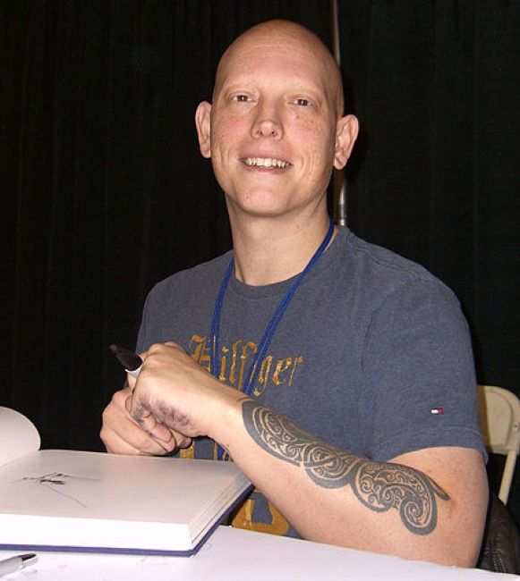
×
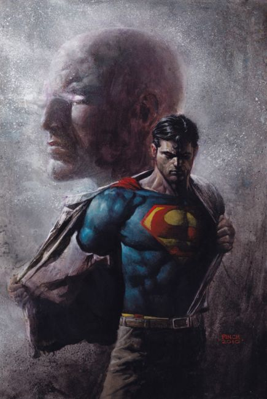
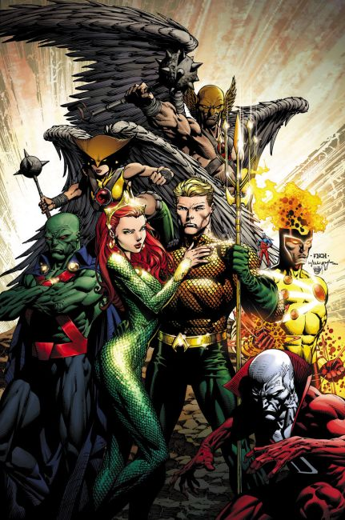
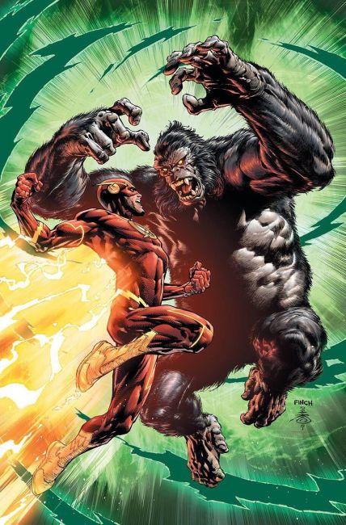
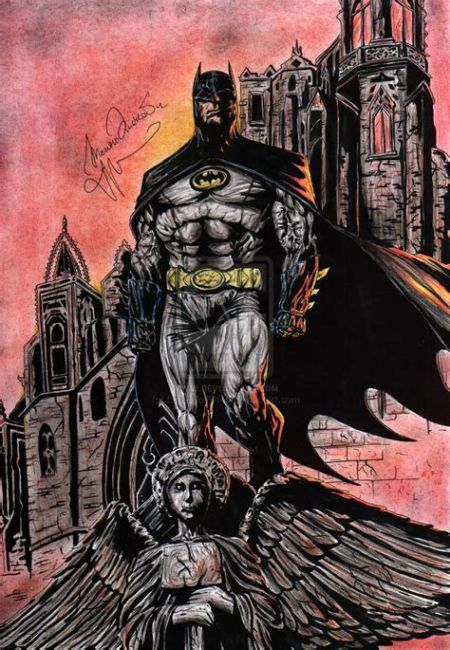
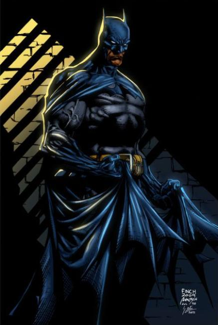
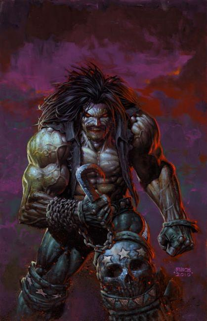
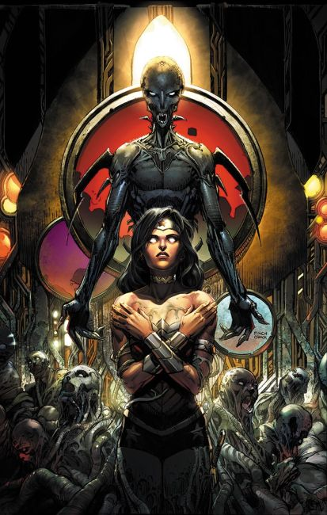
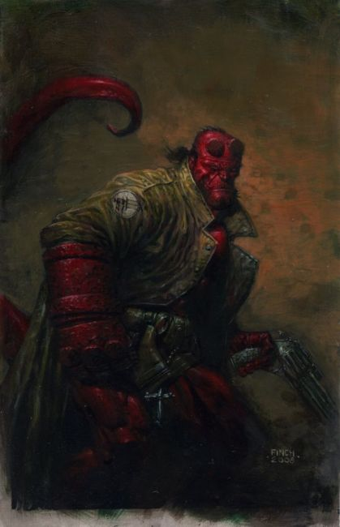
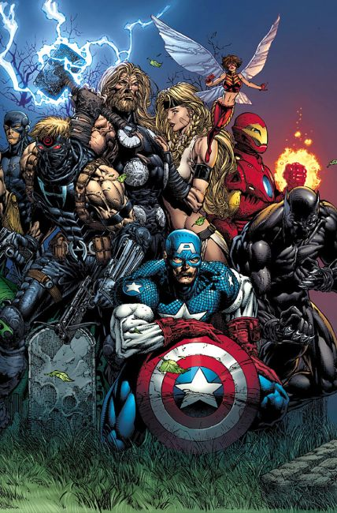
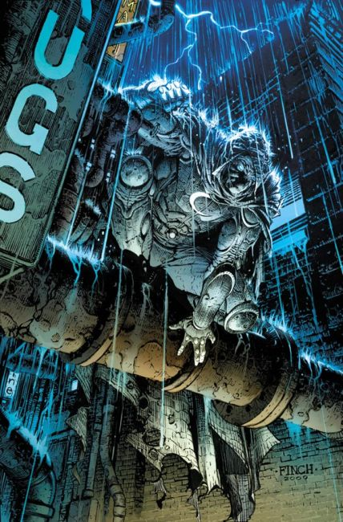
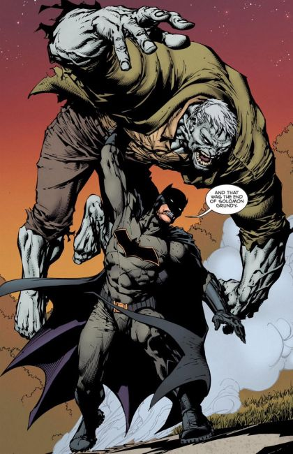
❮
❯
David Finch is a Canadian-born comics artist known for his work on Top Cow Productions' Cyberforce, as well as numerous subsequent titles for Marvel Comics and DC Comics, such as The New Avengers, Moon Knight, Ultimatum, and Brightest Day. He has provided album cover art for the band Disturbed, and done concept art for films such as Watchmen.
Finch was awarded the Yellow Kid award in 2000
Joe Shuster Award for Outstanding Artist in 2009
Eisner Award for the Best Short Story "Good Boy" in Batman Annual #1 2017
DC Comics
Batman #700 (2010)
Batman vol. 3 #1–5, 16–20, 24, 50 (2016–2018)
Batman: The Return #1 (2010)
Batman: The Dark Knight #1–5 (2010–2011)
Batman: The Dark Knight vol. 2 #1–7, 9–15 (2011–2013)
Forever Evil #1–7 (2013–2014)
Justice League of America vol. 3 #1–3 (2013)
Superman: War of the Supermen #0 (among other artists) (2010)
Superman/Batman #75 (2010)
Wonder Woman vol. 4 #36–42, 44–46, 48–50, Annual #1 (2014–2016)
Image Comics
Aphrodite IX (full pencils): #0–2; (with Clarence Lansang): #3 (2000–2001)
Ascension (full pencils): #1–5; (among other artists): #6–11 (1997–1999)
Codename: Strikeforce #7 (1994)
Cyberforce #15–22, 24–29, 31, Annual #1 (1994–1997)
Darkness (pencil assists): #20–21; (full pencils): #39 (1999–2001)
Ripclaw (Wizard special edition) #½ (1995)
Tales of the Witchblade (with Billy Tan) #2 (1997)
Image Comics and DC Comics
Darkness/Batman (1997)
Image Comics and Marvel Comics
Witchblade/Elektra (1997)
Marvel Comics
The Avengers #500–503 (2004)
Call of Duty: The Brotherhood #1–6 (2002)
Daredevil vol. 2 #65 (2004)
Fallen Son: The Death of Captain America: Spider-Man (2007)
Legion of Monsters: Morbius (Dracula/Lilith) #14 (2007)
Moon Knight vol. 4 #1–8 (2006–2007)
New Avengers #1–6, 11–13 (2005)
Spider-Man Unlimited vol. 2 #14 (2006)
Star Trek/X-Men (1996)
Ultimate X-Men #27–28, 30, 34–45 (2003–2004)
Ultimatum miniseries #1–5 (2008–2009)
Uncanny X-Men ("Call of Duty") #406 (2002)
Wolverine vol. 2 (Alpha Flight) #173, ("Call of Duty") #176 (2002)
Wolverine #900 (2010)
X-Men: Second Coming #1 (2010)
X-Men Unlimited #35, 40 (2002–2003)